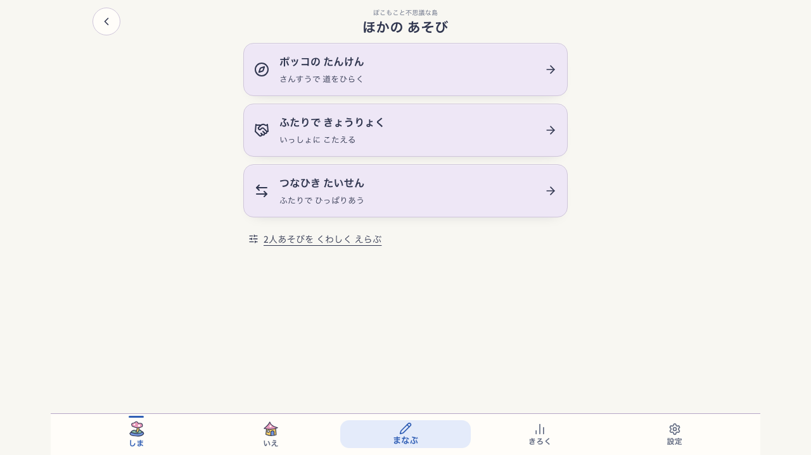
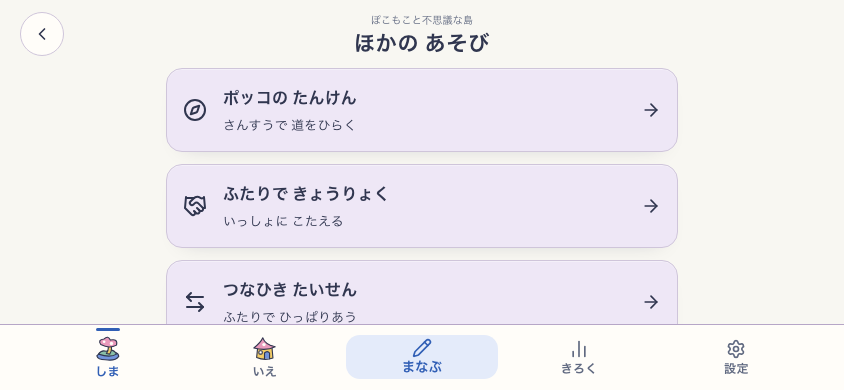
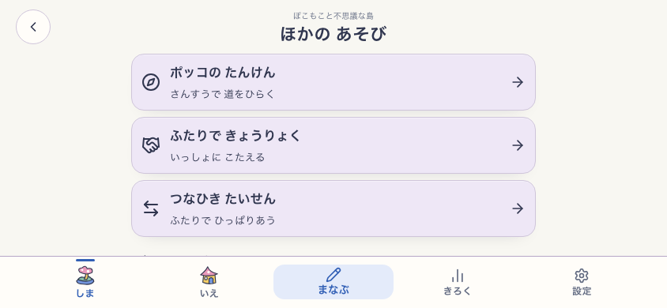

現行Island「ほかの あそび」— live-81
F-45 — 広い画面の見出しと選択列
修正前の1280pxでは見出し中心x=269.93、選択列中心x=640、差370.07px。広い画面では戻るボタンを左に残し、見出しを選択列中央へ合わせた。回帰条件は中心差2px以内。スマホ幅は既存の左寄せのまま。


F-46 — 短い横画面の主要選択肢
修正前の844×390では固定ナビ上端y=324.41pxに対し3枚目カード下端がy=344.19pxで、約19.78pxがナビに隠れた。短い横画面だけカードをコンパクト化し、主要3項目をナビより上に表示。各カードは44px以上のタップ領域を保つ。

